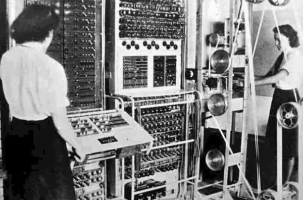
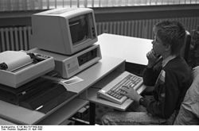
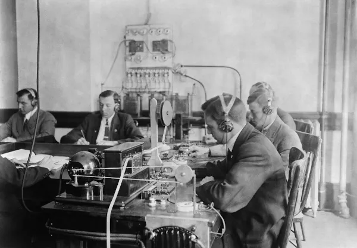
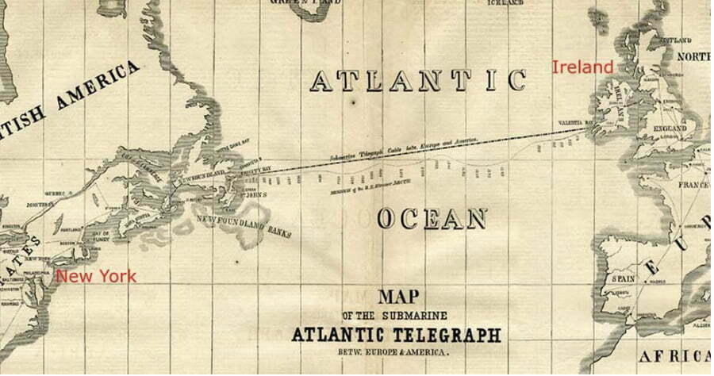
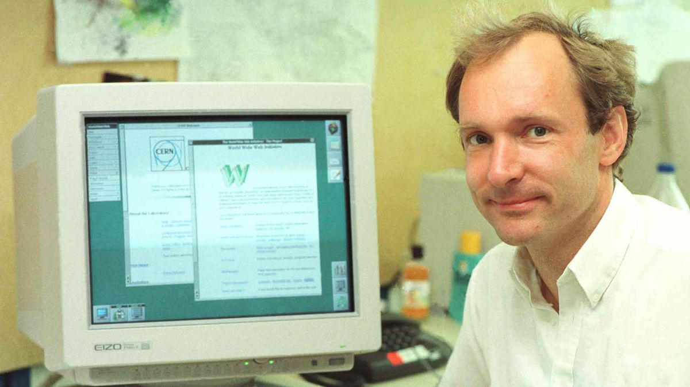

Colossus: O Decifrador de Códigos
Os primeiros computadores foram desenvolvidos durante a primeira metade do século XX, marcando uma evolução
significativa na capacidade de cálculo e processamento de informações.
Antes de mergulharmos no mundo dos computadores eletrônicos, é crucial reconhecer as máquinas mecânicas que
pavimentaram o caminho. A Máquina Analítica, idealizada por Charles Babbage no século XIX, embora nunca
totalmente realizada em sua época, é um testemunho precoce da ambição humana em automatizar o cálculo. Este
dispositivo complexo, com seus planos de programação e capacidade de processamento, é frequentemente celebrado
como o precursor dos computadores modernos.
A transição para a computação eletrônica teve um marco fundamental com o desenvolvimento do ENIAC (Electronic
Numerical Integrator and Computer) em 1945. Projetado para acelerar os cálculos balísticos durante a Segunda
Guerra Mundial, o ENIAC marcou o início da era dos computadores eletrônicos. Sua capacidade de ser reprogramado
para resolver uma vasta gama de problemas computacionais foi revolucionária.
Colossus: O Decifrador de Códigos
Paralelamente ao ENIAC, o projeto britânico Colossus lidava com o desafio da criptografia de guerra. Operacional
desde 1943, o Colossus foi pioneiro na computação digital eletrônica, desempenhando um papel crucial na análise
de comunicações codificadas. Embora construído para uma função específica, sua existência é um testemunho do
papel da tecnologia na história.

Ambos os computadores citados acima fizeram parte da primeira geracao de computadores da humanidade porem com
novas tecnologias como o uso de transitores
nos computadores nos levaram a auma nova era de desenvolvimento. Fazendo com que os computadores nao mais
tivessem o tamanho de uma sala ou andar, agora passaram a ser um pouco menores
e mais eficientes.
TRADIC, da Bell Laboratories (1954 )

Apos eles passarama a surgir os computadores com circuito integrado que estavam ainda menores e muito similares aos computadores modernos como o APPLE 2 Lançado em 1976, por Steve Jobs e Steve Wozniak (fundadores da Apple Corp.) Foi o primeiro microcomputador pessoal a ter sucesso comercial.

Por fim em meados de 1971 comecaram surgiros primeiros computadores como sao atualmente, a principio nao
possuiam a
mesma capacidade e "potencia" dos computadores do seculo XXI mas ja possuiam as caracteristicas dos computadores
modernos ou como sao chamados
computadores pessoais

Antes mesmo de se falar em internet o mundo ja buscava formas de se comunicar de formas mais rapidas e eficiente, e uma das primeiras formas de se comunicar a longas distancias forom feito atraves do codigo morse por meio do telegrafo, uma tecnica de "ponto" e "traco" que seguindo a sua logica era possivel formar palavras e frases, alem disso em 1958 foi passado um cabo transoceancio para manter essa comunicacao.
 
Em meados da decada de 1950 com a guerra fria a busca por vantagens de comunicacao e estar um passo a frente nas
tecnologias, inumeras invencoes tecnologicas possibilitaram otimizar
as comunicacoa e criar oque hoje podemos chamar de mundo globalizado e conectado.
Durante a guerra fria surgiram a primeira geracao de computadores ENIAC e Colossus que agilizavam calculos para tragetoria de misseis, tempo estimado para alguma acao e afins em sua maioria com intuito de uso militar, surgindo nessa mesma opoca a DARPA ( Defense Advanced Reserch Projects Agency ).
Em 1960 joshep Carl Robnett licklider teorizou sobre uma rede que todos poderia se comunicar atraves dela e apartir dessa momento comecou a busca pelos cientista da epoca para tornar isso realidade. Em 1969 seu projeto ARPANET fez algo nunca antes visto, transmitou uma mensagem ao longo dos Estado Unidos Das Americas (USA) da universidade da califonia (UCLA) ate o instituto de pesquisa de stanfor (sri) a mensagem "login", e foi um "meio" sucesso pois assim como foi a primeira comunicacao do genro o correu tambem ao mesmo tempo a primeira queda de conexao que fez com que chegasse apenas o comeco da palavra, ou seja, chegou apenas o "lo" ate o instituto de pesquisa .
Diante desse acontecimento e em vista as possibilidades que estavam sugindo em 1974 surgiu um documento
descrevendo o conceito de “Um protocolo para interconexão de rede de pacotes”, artigo escrito por Vint Cerf e
Bob Kahn o qual delineou a ideia do protocolo TCP. Levaria até o ano de 1978 para que o TCP/IP se concretizasse
Alem disso inumeras empresas comoecaram a sugir com o intuito de se especializar em algo e apartir desse momento a internet que antes era algo apenas para os militares e uso cientifico passou a ter um vies mais voltado para a comunidade como um todo, dando origem a empresas como : milnet (militar), nasa (pesquisas espaciais e calculos ), nsfnet ( educacao e pesquisas )
Em 1989, Tim Berners-lee viu a oportunidade de unir hipertexto com tcp/ip e criar a World wide web (www) e dar
origem ao primeiro navegar
chamado Worldwideweb em 1991
